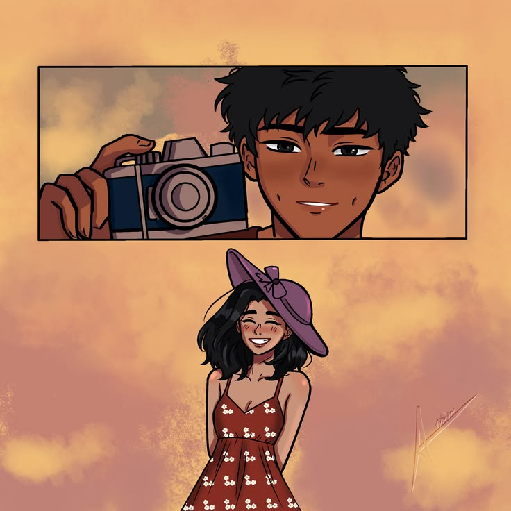
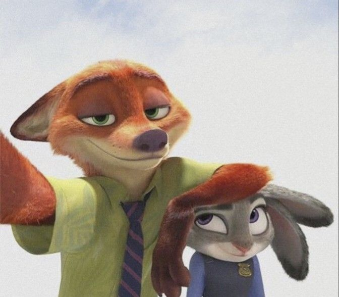
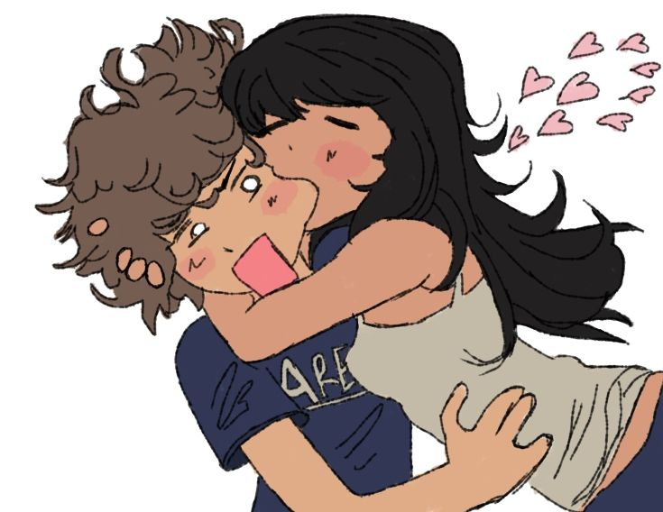
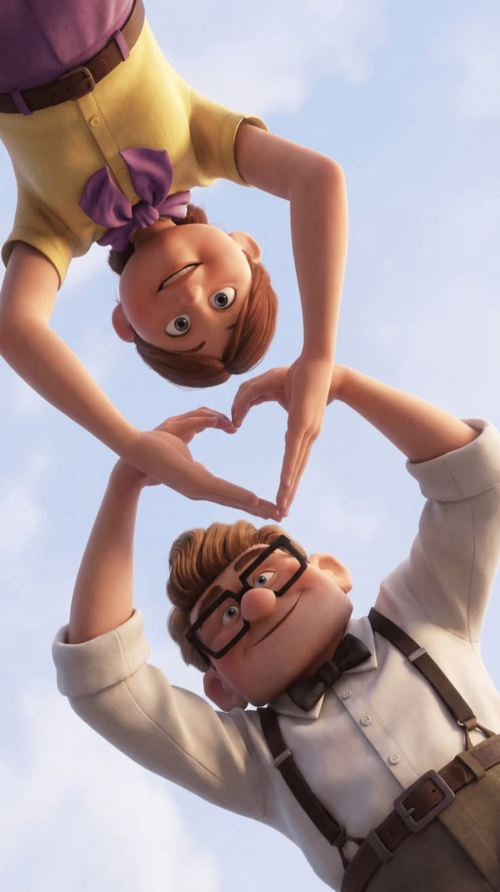

For you, from me · since 12 February 2026
A little life,
and all the life
still waiting for us.
I wanted a little place for the days we’ve had, the things that make us laugh, and all the small and impossible things we might do together.
Come in, lovewhere-we-met.jpgthe beginning, in our own handwriting
forever, okay?
The clock started here
And it’s still going.
12 February 2026 · 4:36 in the afternoon · India
Give or take a second. I’m counting the good ones.
in my pocket
for you
There’s a note tucked in here.open it ↗
Hey love,
I made this because I like the thought of a life that keeps collecting little stories with you. Some of these things are silly. Some are very far away. We don’t have to do them all, or do them in any order. I just wanted to dream them up with you.
Here’s to whatever comes next and to being on the same side of it.
Yours, always-ish,
your person
Evidence that we were here



A few things I never
want to forget.
The big, the tiny & the “imagine if…”
A life’s worth
of little yeses.
Seven hundred ideas is a ridiculous number. Good. We can take our time.
Some are plans, some are daydreams, some might turn into a story we tell for years. None of them are promises we have to make today.
there our way
700 ideas, no rush.

Whenever we get there
One day, let’s
turn back here.
We’ll have forgotten half of what we wrote. That’s okay. We’ll have made our own list along the way.
Back to the first pagedoing life with you.